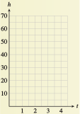

Chapter 6 Quadratic Functions
¶
The models we have explored so far, namely, linear, exponential, logarithmic, and power, are monotonic functions, that is, always increasing or always decreasing on their domains. (Remember that we used power functions as models in the first quadrant only.) In this chapter, we investigate problems where the output variable may change from increasing to decreasing, or vice versa. The simplest sort of function that models this behavior is a quadratic function, one that involves the square of the variable.
Around 1600, Galileo began to study the motion of falling objects. He used a ball rolling down an inclined plane or ramp to slow down the motion.

Galileo had no accurate way to measure time; clocks had not been invented yet. So he used water running into a jar to mark equal time intervals. After many trials, Galileo found that the ball traveled \(1\) unit of distance down the plane in the first time interval, \(3\) units in the second time interval, \(5\) units in the third time interval, and so on, as shown in the figure, with the distances increasing through odd units of distance as time went on.
| Time | Distance traveled |
Total distance |
| \(1\) | \(1\) | \(1\) |
| \(2\) | \(3\) | \(5\) |
| \(3\) | \(5\) | \(9\) |
| \(4\) | \(7\) | \(16\) |
| \(5\) | \(9\) | \(25\) |
As you can see in the table above, the total distance traveled by the ball is proportional to the square of the time elapsed, \(s = kt^2\text{.}\) Galileo found that this relationship held no matter how steep he made the ramp. Plotting the height of the ball as a function of time, we obtain a portion of the graph of a quadratic function.
Investigation 6.0.1. Height of a Baseball.
Suppose a baseball player pops up, that is, hits the baseball straight up into the air. The height, \(h\text{,}\) of the baseball \(t\) seconds after it leaves the bat can be calculated using a formula from physics. This formula takes into account the initial speed of the ball (\(64\) feet per second) and its height when it was hit (\(4\) feet). The formula for the height of the ball (in feet) is
-
Evaluate the formula to complete the table of values for the height of the baseball.
\(t\) \(0\) \(1\) \(2\) \(3\) \(4\) \(h\) \(\hphantom{blank}\) \(\hphantom{blank}\) \(\hphantom{blank}\) \(\hphantom{blank}\) \(\hphantom{blank}\) -
Graph the height of the baseball as a function of time. Plot data points from your table, then connect the points with a smooth curve.
 What are the coordinates of the highest point on the graph? When does the baseball reach its maximum height, and what is that height?
Use the formula to find the height of the baseball after \(\dfrac{1}{2}\) second.
Check that your answer to part (4) corresponds to a point on your graph. Approximate from your graph another time at which the baseball is at the same height as your answer to part (4).
Use your graph to find two times when the baseball is at a height of \(64\) feet.
Use your graph to approximate two times when the baseball is at a height of \(20\) feet. Then use the formula to find the actual heights at those times.
Suppose the catcher catches the baseball at a height of \(4\) feet, before it strikes the ground. At what time was the ball caught?
Use your calculator to make a table of values for the equation \(h = -16t^2 + 64t + 4\) with TblStart = \(0\) and \(\Delta\)Tbl \(= 0.5\text{.}\)
-
Use your calculator to graph the equation for the height of the ball, with window settings
\begin{equation*} \begin{aligned}[t] \text{Xmin} \amp = 0, \amp\amp \text{Xmax} = 4.5, \amp\amp \text{Yscl} = 5\\ \text{Ymin} \amp = 0, \amp\amp \text{Ymax} = 70, \amp\amp \text{Yscl} = 5 \end{aligned} \end{equation*} Use the intersect command to verify your answer part (7): Estimate two times when the baseball is at a height of \(20\) feet.
Use the intersect command to verify your answer to part (8): At what time was the ball caught if it was caught at a height of \(4\) feet?